Working on our book #1
December 27, 2020
My brother and I started working on our cat book. It will be a children’s book with lots of cats.
Here is a sketch of the first page. It’s a kitchen with a bunch of cats.
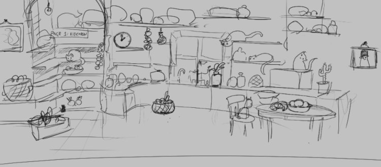
December 27, 2020
My brother and I started working on our cat book. It will be a children’s book with lots of cats.
Here is a sketch of the first page. It’s a kitchen with a bunch of cats.

January 8, 2021
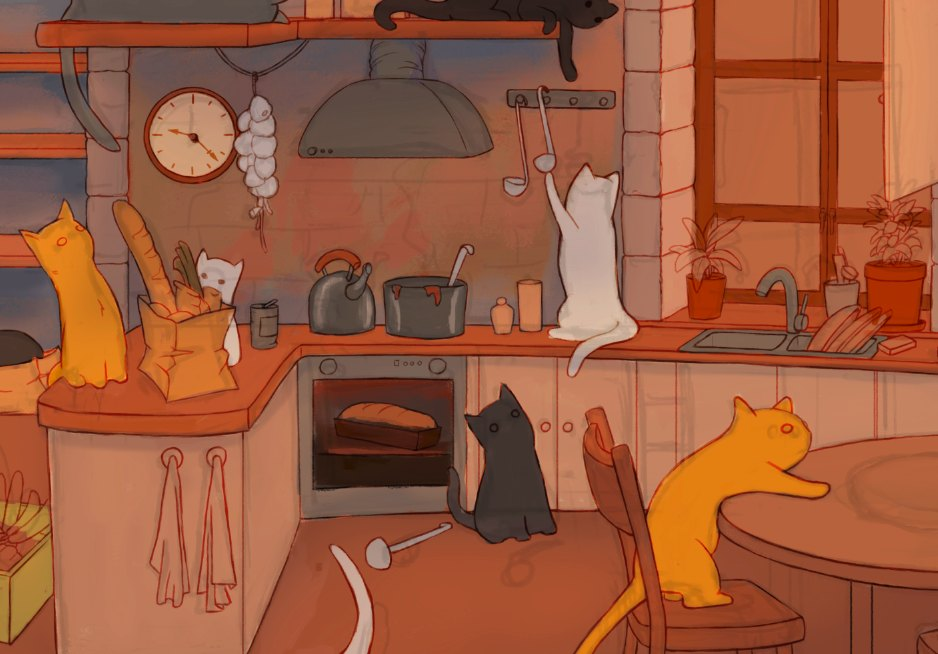
Work on our book continues. It doesn’t look like much yet, but it will be so pretty 🙂
See how it looked before: Working on our book #1
February 2, 2021
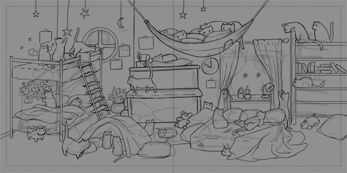
This is the bedroom in our cat book 🙂
See also:
February 4, 2021
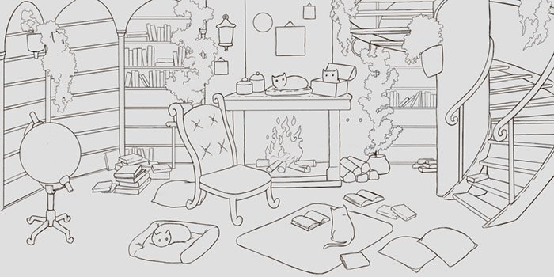
All I do all day is work on our cat book 🙂 This is the library. I know it doesn’t look like much yet but it will be amazing.
February 5, 2021
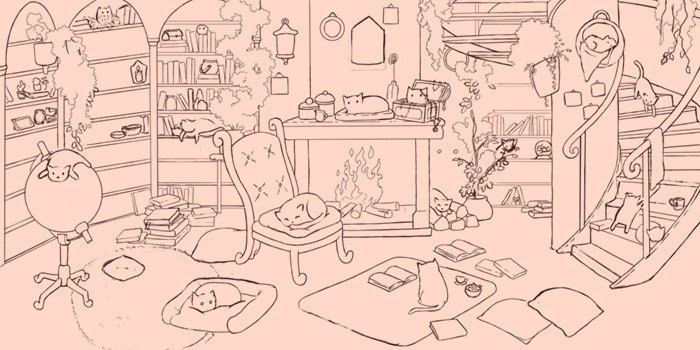
My brother and I are working on our book still.
I am adding cats and all the various items to the images. It’s taking forever. I am desperately trying to come up with 100 or so things that can be placed here.
February 8, 2021
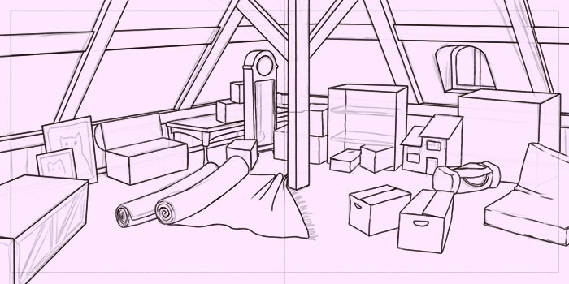
Working on the attic today. This is just an initial sketch. No cats yet.
See also:
February 10, 2021
A few weeks ago, my brother and I started working on our first children’s book about cats. This is a good time to write a bit about the process and why we decided on this project.
From the start it was a challenge:
Why make a book then? Our time would be better spent making a new game or starting another apparel store. We have experience with those so we would know how to make them profitable. But that would mean working on something that we are familiar with and staying in our comfort zone. That’s not good. It’s better to challenge yourself, work on something difficult, and learn in the process.
There’s another reason why it’s a good idea to have different projects — income diversification. If you have just one income source, then you are vulnerable. If that income source dries up, then you have to scramble to find work and might be forced to accept unfavorable terms. But if you have two or three income sources, then you are in a more secure position. Even if you lose one of your income streams, you are not going to be desperate. You will have time to figure things out, search for other opportunities.
You never know how successful your project is going to be. It’s a risk to work on something new, it might not work out at all. We had some failed attempts. But we worked on so many things that at least some of them became profitable.
There’s a risk that our book won’t get published or won’t get many sales. There’s also a chance that it will get published and become another passive income source.
February 11, 2021
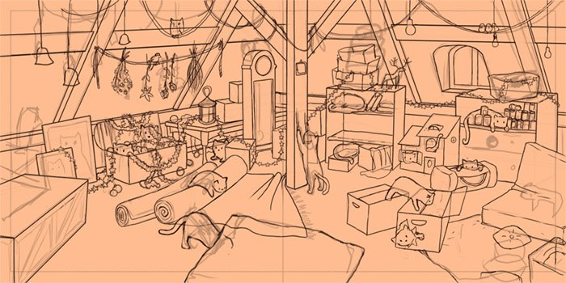
Sharing a small update to the attic in our cat book 🙂
May 11, 2021
You might have wondered what happened to the book about cats that my brother and I have been working on. We had to put it on hold — other projects got in the way. But now we are finally back to it.
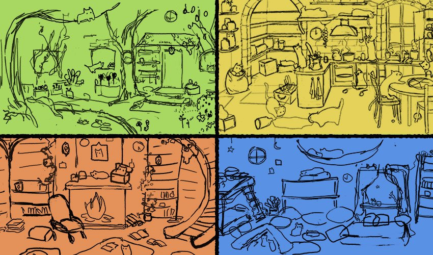
Above, you can see the initial sketches of four areas that we are illustrating. The whole book is about a house full of cats. Each two-page spread is one area, and there will be seven areas in total. I am now reworking the garden and plan to post an update tomorrow.
May 12, 2021
My brother and I are making our first book about cats. Today I’ve been working on the garden area. Here is the initial sketch:
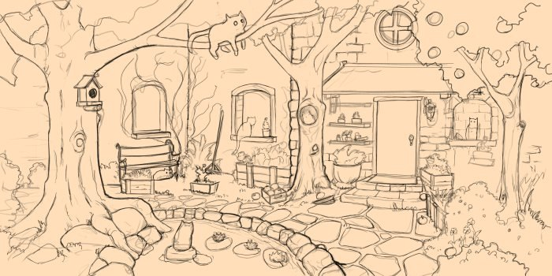
The problem is that the trees create a kind of frame in the picture, as so:
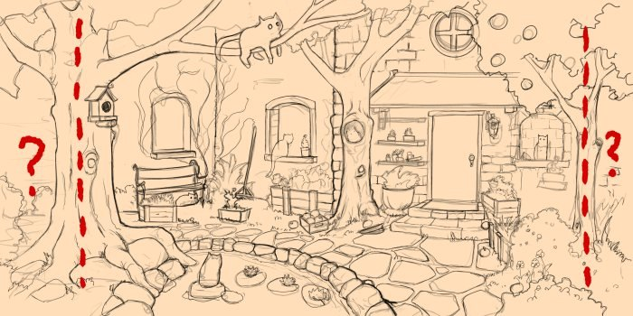
There’s still a lot of space outside those borders made by trees. That’s not a good composition because you can’t really draw anything interesting there. The eye will naturaly see what’s inside the borders and will miss anything that is outside.
To fix that, I moved the whole image left so that there’s not so much of that useless space on the left. And then moved the other tree more to the right:
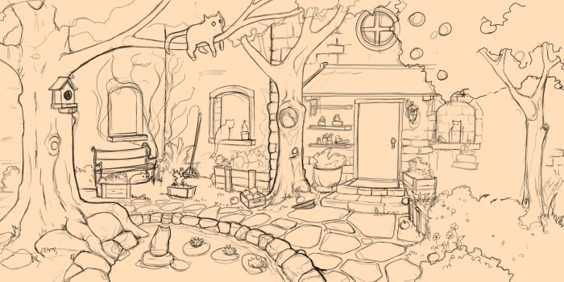
Now I am adding more cats and details but that’s not ready to show yet.
May 21, 2021
You guys know that my brother and I have been working on our cat book. Each page takes a while.
You start with a rough sketch:
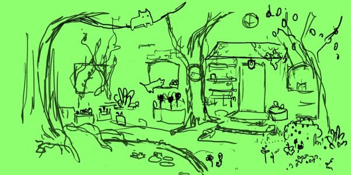
On top of it you create a cleaner sketch:
And then you keep adding details. Some things you can draw from memory. But if you are unsure how something looks you find references and take photos of things that you want to add. Here I took a photo of a plant spray bottle and then drew it:
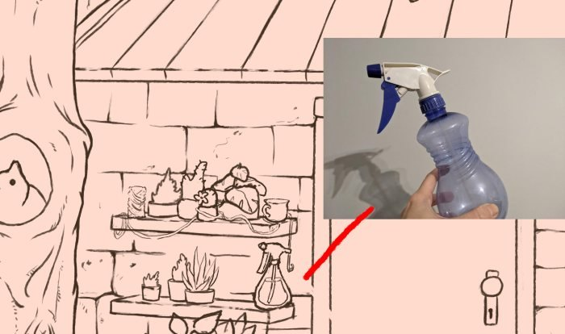
I googled strawberries and then sketched them too using photos as references:
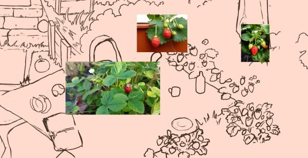
I searched for various plants and flowers for inspiration:
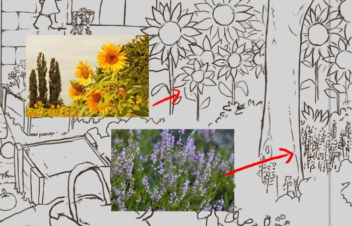
And I even used one of my designs with two cats and added them to the image:
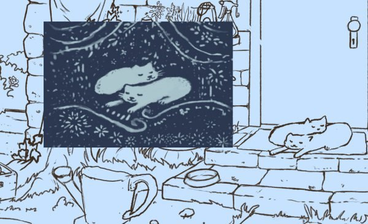
And that’s how the whole drawing is made 🙂
May 23, 2021
I made a new landing page, just with a subscribe button, using ConvertKit. ConvertKit is a service that lets you collect e-mail addresses and send newsletters.
If you want to subscribe to our newsletter about our cat book you can do it here.
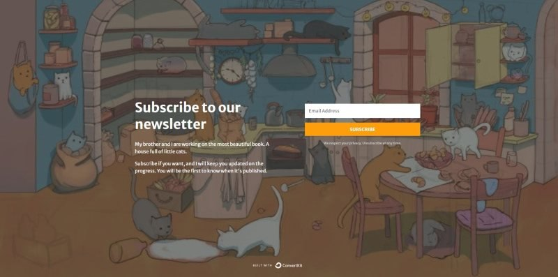
ConvertKit is an alternative to Mailchimp, which I had always used before. This is the first time I’ve used ConvertKit instead of Mailchimp. Mostly I just want to see how are they different and test which one is better.
I can already tell you that ConvertKit is very easy to use. I created a landing page to let people subscribe to a newsletter about our cat book in less than 5 minutes. If you have any kind of project/book/game/whatever-else-you-are-working-on, it’s a good idea to start collecting the e-mail addresses of anyone who might be interested as soon as possible. You can go to ConvertKit and create an account — for free! — and then create a page in mere minutes. Good luck!
I would love to see anything you guys are working on, let me know here in the comments or on Twitter.
October 12, 2021
My brother has resumed work on our cat book. If you don’t know what I am talking about, here is the first post I wrote about it. The book is about a house full of cats. There will be seven areas in total. We started with the kitchen. After that we worked on the library, the garden, and the attic.
Now I am working on the toy room. My brother drew the initial sketch and mapped out larger furniture:
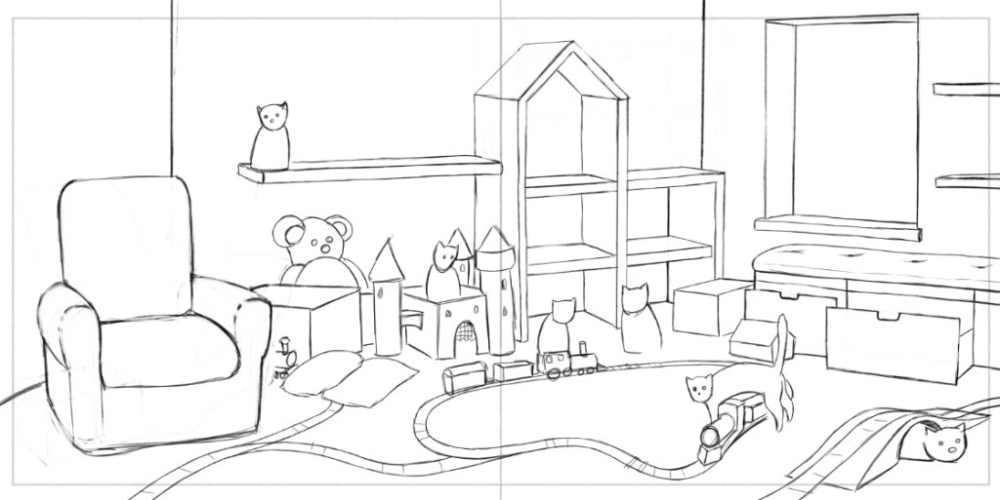
Now it’s my job to add all the details: toys, book, stuffed animals, and dozens of cats.